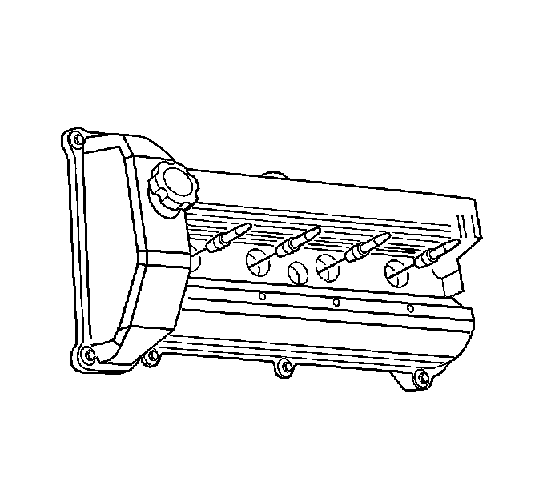

Spark Plug: Service and Repair
Spark Plug Replacement
Removal Procedure
1. Remove the ignition coils. Refer to Ignition Coil Replacement - Bank 1 (Service and Repair) and/or Ignition Coil Replacement - Bank 2 (Service and Repair) .
Caution: Wear safety glasses when using compressed air, as flying dirt particles may cause eye injury.
Notice: Clean the spark plug recess area before removing the spark plug. Failure to do so could result in engine damage because of dirt or foreign material entering the cylinder head, or by the contamination of the cylinder head threads. The contaminated threads may prevent the proper seating of the new plug. Use a thread chaser to clean the threads of any contamination.
2. Clean the spark plug recess area with low pressure air.

Notice: Allow the engine to cool before removing the spark plugs. Attempting to remove the spark plugs from a hot engine may cause the plug threads to seize, causing damage to cylinder head threads.
3. Remove the spark plugs from the cylinder heads.
4. Inspect the spark plugs. Refer to Spark Plug Inspection (Testing and Inspection) .
Installation Procedure
Notice: Use only the spark plugs specified for use in the vehicle. Do not install spark plugs that are either hotter or colder than those specified for the vehicle. Installing spark plugs of another type can severely damage the engine.
Notice: Check the gap of all new and reconditioned spark plugs before installation. The pre-set gaps may have changed during handling. Use a round feeler gage to ensure an accurate check. Installing the spark plugs with the wrong gap can cause poor engine performance and may even damage the engine.
1. Measure the spark plug gap on the spark plugs to be installed. Compare the measurement to the gap specifications. Refer to Ignition System Specifications (Specifications) , correct as necessary.
Notice: Be sure that the spark plug threads smoothly into the cylinder head and the spark plug is fully seated. Use a thread chaser, if necessary, to clean threads in the cylinder head. Cross-threading or failing to fully seat the spark plug can cause overheating of the plug, exhaust blow-by, or thread damage.
Notice: Refer to Component Fastener Tightening Notice (Component Fastener Tightening Notice) .
2. Install the spark plugs to the cylinder heads.
Tighten the spark plugs to 20 N.m (15 lb ft).
3. Install the ignition coils. Refer to Ignition Coil Replacement - Bank 1 (Service and Repair) and/or Ignition Coil Replacement - Bank 2 (Service and Repair) .